Access an Oracle Autonomous Database
Learn how to access an Oracle Autonomous Database using the Micronaut framework.
Authors: Burt Beckwith
Micronaut Version: 4.10.2
1. Getting Started
In this guide, we will create a Micronaut application written in Groovy.
2. What you will need
To complete this guide, you will need the following:
-
Some time on your hands
-
A decent text editor or IDE
-
JDK 17 or greater installed with
JAVA_HOMEconfigured appropriately -
An Oracle Cloud account (create a free trial account at signup.oraclecloud.com)
-
Oracle Cloud CLI installed with local access to Oracle Cloud configured by running
oci setup config== Solution
We recommend that you follow the instructions in the next sections and create the application step by step. However, you can go right to the completed example.
-
Download and unzip the source
3. Provision Oracle Autonomous Database
Login to your Oracle Cloud tenancy, and from the Oracle Cloud Menu select "Oracle Database" and then "Autonomous Transaction Processing":
Enter "MicronautDemo" as the display name and database name:
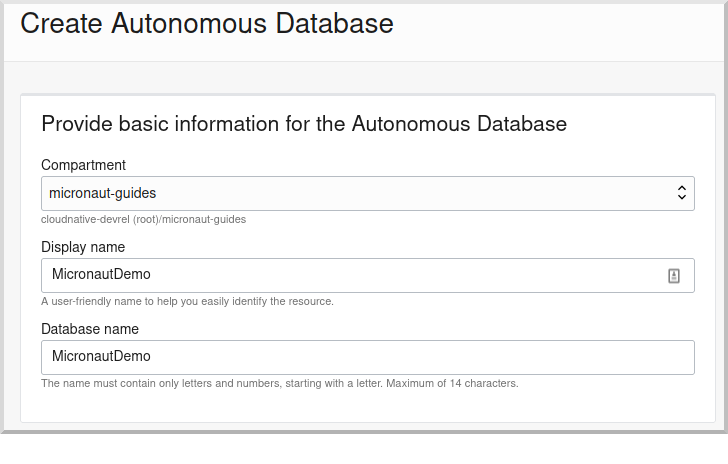
Select "Transaction Processing" and "Serverless", and if you’re using a trial account be sure to select "Always Free":
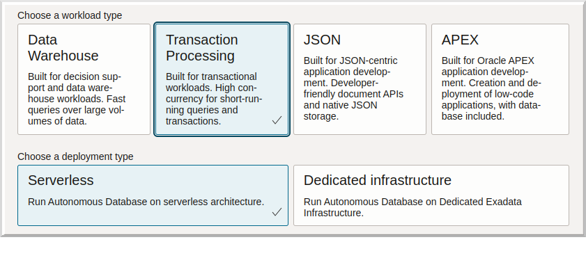
Create an Admin password (must be 12 to 30 characters and contain at least one uppercase letter, one lowercase letter, and one number) and select "Secure access from everywhere":
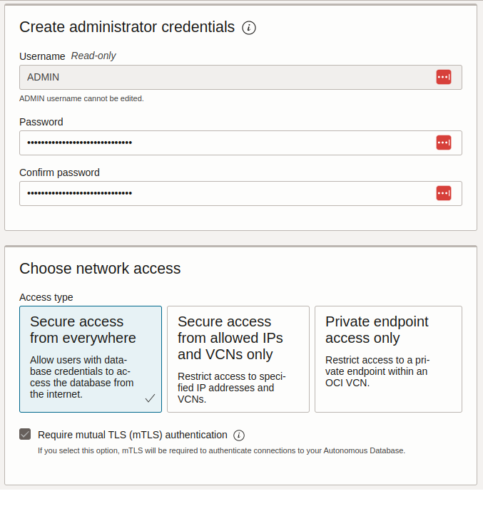
Keep the default license ("License included") and click "Create Autonomous Database" to create your instance:

On the "Autonomous Database Details" page click the "Copy" link in the OCID row; this is the unique identifier for your database instance which you will need later for your application configuration.

Next, create a schema user. On the "Autonomous Database Details" page click the "Database Actions" button and select the SQL option:
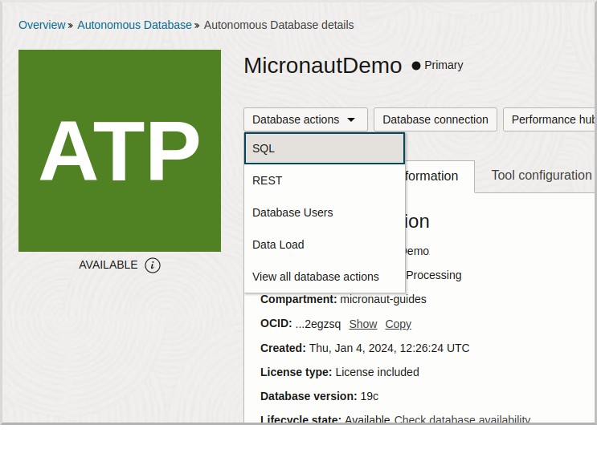
Login with username "ADMIN" and the admin password you defined earlier:

Copy and paste the following SQL which will create a schema user into the worksheet:
CREATE USER micronautdemo IDENTIFIED BY "XXXXXXXXX";
GRANT CONNECT, RESOURCE TO micronautdemo;
GRANT UNLIMITED TABLESPACE TO micronautdemo;Create a schema user password (must be at least 12 characters and contain a number and an uppercase letter) and replace the text "XXXXXXXXX" with that password.
Click the ("Run Script") button to execute the SQL:
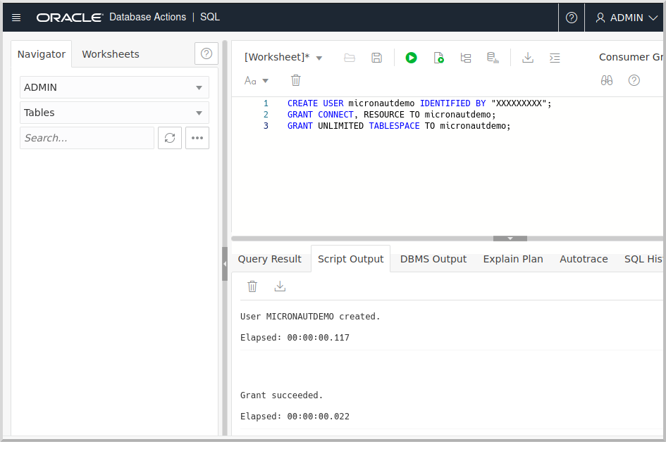
4. Writing the App
Create an application using the Micronaut Command Line Interface or with Micronaut Launch.
mn create-app example.micronaut.micronautguide \
--build=maven --lang=groovy \
--features=data-jdbc,flyway,http-client,oracle-cloud-atp
If you don’t specify the --build argument, Gradle with the Kotlin DSL is used as the build tool. If you don’t specify the --lang argument, Java is used as the language.If you don’t specify the --test argument, JUnit is used for Java and Kotlin, and Spock is used for Groovy.
|
The previous command creates a Micronaut application with the default package example.micronaut in a directory named micronautguide.
| If you have an existing Micronaut application and want to add the functionality described here, you can view the dependency and configuration changes from the specified features, and apply those changes to your application. |
4.1. Entity class
Create a Thing entity class to represent database data:
src/main/groovy/example/micronaut/domain/Thing.groovy
package example.micronaut.domain
import groovy.transform.CompileStatic
import io.micronaut.data.annotation.GeneratedValue
import io.micronaut.data.annotation.Id
import io.micronaut.data.annotation.MappedEntity
import io.micronaut.serde.annotation.Serdeable
@Serdeable
@MappedEntity
@CompileStatic
class Thing {
@Id
@GeneratedValue
Long id
final String name
Thing(String name) {
this.name = name
}
}4.2. Repository class
Create a ThingRepository interface to read and write Thing database data:
src/main/groovy/example/micronaut/repository/ThingRepository.groovy
package example.micronaut.repository
import example.micronaut.domain.Thing
import io.micronaut.core.annotation.NonNull
import io.micronaut.data.jdbc.annotation.JdbcRepository
import io.micronaut.data.repository.CrudRepository
import static io.micronaut.data.model.query.builder.sql.Dialect.ORACLE
@JdbcRepository(dialect = ORACLE)
interface ThingRepository extends CrudRepository<Thing, Long> {
@Override
@NonNull
List<Thing> findAll()
Optional<Thing> findByName(String name)
}4.3. Data populator class
Create a DataPopulator class to create some example database entries when the application starts:
src/main/groovy/example/micronaut/DataPopulator.groovy
package example.micronaut
import example.micronaut.domain.Thing
import example.micronaut.repository.ThingRepository
import groovy.transform.CompileStatic
import io.micronaut.context.annotation.Requires
import io.micronaut.context.event.StartupEvent
import io.micronaut.runtime.event.annotation.EventListener
import jakarta.inject.Singleton
import jakarta.transaction.Transactional
import static io.micronaut.context.env.Environment.TEST
@Singleton
@Requires(notEnv = TEST)
@CompileStatic
class DataPopulator {
private final ThingRepository thingRepository
DataPopulator(ThingRepository thingRepository) {
this.thingRepository = thingRepository
}
@EventListener
@Transactional
void init(StartupEvent event) {
// clear out any existing data
thingRepository.deleteAll()
// create data
thingRepository.saveAll([
new Thing('Fred'),
new Thing('Barney')
])
}
}4.4. Controller class
Create a ThingController class to view persisted data:
src/main/groovy/example/micronaut/controller/ThingController.groovy
package example.micronaut.controller
import example.micronaut.domain.Thing
import example.micronaut.repository.ThingRepository
import groovy.transform.CompileStatic
import io.micronaut.http.annotation.Controller
import io.micronaut.http.annotation.Get
import io.micronaut.scheduling.TaskExecutors
import io.micronaut.scheduling.annotation.ExecuteOn
import jakarta.validation.constraints.NotBlank
@Controller('/things')
@ExecuteOn(TaskExecutors.BLOCKING)
@CompileStatic
class ThingController {
private final ThingRepository thingRepository
ThingController(ThingRepository thingRepository) {
this.thingRepository = thingRepository
}
@Get
List<Thing> all() {
thingRepository.findAll()
}
@Get('/{name}')
Optional<Thing> byName(@NotBlank String name) {
thingRepository.findByName(name)
}
}4.5. Configuration
Create a new Flyway migration SQL script in src/main/resources/db/migration/V1__create-schema.sql and add the following:
src/main/resources/db/migration/V1__create-schema.sql
CREATE TABLE "THING" ("ID" NUMBER(19) PRIMARY KEY NOT NULL,"NAME" VARCHAR(255) NOT NULL);
CREATE SEQUENCE "THING_SEQ" MINVALUE 1 START WITH 1 NOCACHE NOCYCLE;Edit src/main/resources/logback.xml and add the following (anywhere in the <configuration> element) to monitor the SQL queries that Micronaut Data performs:
<logger name='io.micronaut.data.query' level='debug' />Replace the generated application.properties with this:
src/main/resources/application.properties
micronaut.application.name=micronautguide
micronaut.executors.io.type=fixed
(1)
micronaut.executors.io.nThreads=75
flyway.datasources.default.enabled=true
(2)
oci.config.profile=DEFAULT
datasources.default.dialect=ORACLE
(3)
datasources.default.ocid=
(4)
datasources.default.walletPassword=
datasources.default.username=micronautdemo
(5)
datasources.default.password=| 1 | This is optional, but it’s a good idea to configure the IO pool size when using @ExecuteOn(TaskExecutors.BLOCKING) in controllers |
| 2 | Change the profile name if you’re not using the default, and optionally add a value for the path to the config file if necessary as described in the Authentication section of the Micronaut Oracle Cloud docs |
| 3 | Set the value of the ocid property with the database OCID unique identifier you saved when creating the database |
| 4 | Set the walletPassword property with a password to encrypt the wallet keys (must be at least 8 characters and include at least 1 letter and either 1 numeric or special character) |
| 5 | Set the password property with the micronautdemo schema user password you created |
Oracle Cloud Autonomous Database connection information and credentials are stored in the Oracle Wallet. See the Micronaut Oracle Cloud integration documentation for more details and options for working with Oracle Cloud in Micronaut applications.
4.6. Writing Tests
Create a test to verify that database access works:
src/test/groovy/example/micronaut/repository/ThingRepositorySpec.groovy
package example.micronaut.repository
import example.micronaut.domain.Thing
import io.micronaut.context.ApplicationContext
import spock.lang.Specification
class ThingRepositorySpec extends Specification {
private ApplicationContext applicationContext
private ThingRepository thingRepository
void setup() {
applicationContext = ApplicationContext.run()
thingRepository = applicationContext.getBean(ThingRepository)
}
void testFindAll() {
// clear out existing data; safe because each
// test runs in a transaction that's rolled back
when:
thingRepository.deleteAll()
then:
0L == thingRepository.count()
when:
thingRepository.saveAll([
new Thing('t1'),
new Thing('t2'),
new Thing('t3')
])
List<Thing> things = thingRepository.findAll()
then:
3 == things.size()
['t1', 't2', 't3'] == things*.name.sort()
}
void testFindByName() {
when:
String name = UUID.randomUUID()
Thing thing = thingRepository.findByName(name).orElse(null)
then:
!thing
when:
thingRepository.save(new Thing(name))
thing = thingRepository.findByName(name).orElse(null)
then:
thing
name == thing.name
}
void cleanup() {
applicationContext?.close()
}
}5. Testing the Application
To run the tests:
./mvnw test6. Using Oracle Cloud Vault
In the previous sections, we included the wallet and user passwords in cleartext inside application.properties, which is not a best practice. However, it’s possible to externalize those (and other properties that shouldn’t be in cleartext and/or in source control) with Oracle Cloud Vault.
6.1. Creating the vault
From the Oracle Cloud Menu select "Identity & Security" and then "Vault":
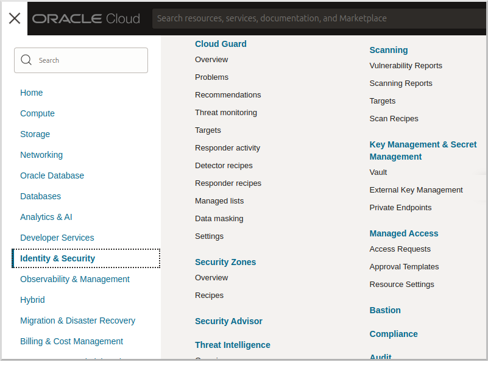
Click "Create Vault":

Then enter a name for the vault, e.g., "mn-guide-vault" and click "Create Vault":
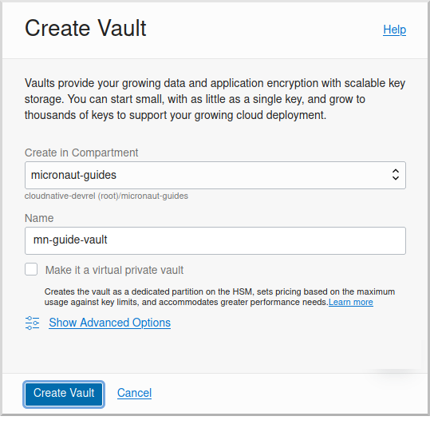
Click the "Copy" link in the OCID row; this is the unique identifier for your vault and you’ll need it later.

Click "Master Encryption Keys" under "Resources", then click "Create Key":
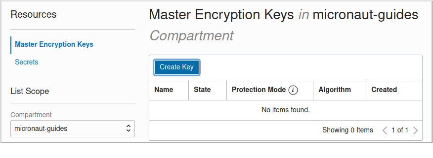
Choose a name for the key, e.g., "mn-guide-encryption-key", and change "Protection Mode" to "Software", then click "Create Key":

Once the key has finished provisioning, click "Secrets" under "Resources", then click "Create Secret":
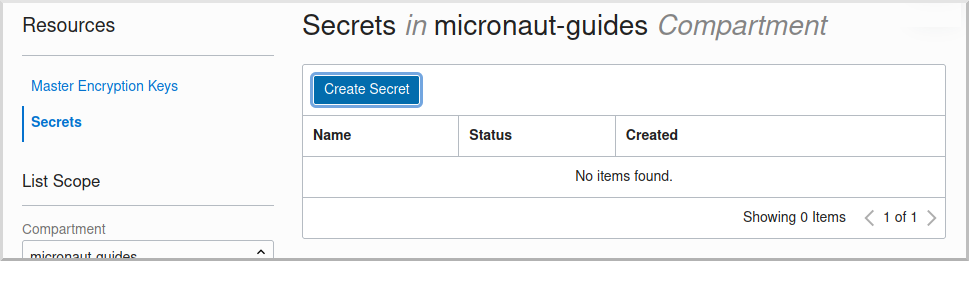
This first secret will be for the wallet password. There are two options for secret naming; one is to use the full name of the property being set, in this case datasources.default.walletPassword. The other is to create a placeholder in application.properties with a name of your choice, e.g., ATP_WALLET_PASSWORD, in the properties file and use that as the name of the secret:
src/main/resources/application.properties
...
datasources.default.ocid=ocid1.autonomousdatabase.oc1.iad.anuwcl...
datasources.default.walletPassword=${ATP_WALLET_PASSWORD}
datasources.default.username=micronautdemo
...Specify the name as either the full property name or the placeholder, then select the encryption key you created. Enter the wallet password value in the "Secret Contents" field, and click "Create Secret":
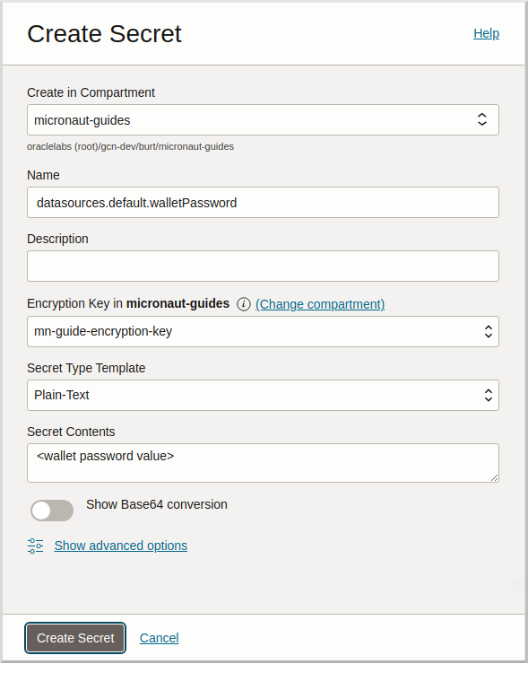
Create another secret for the user password, again either using the full property name (datasources.default.password) or a placeholder (e.g., ATP_USER_PASSWORD) and for "Secret Contents" use the database user password you created earlier.
6.2. Dependency
Add a dependency for the micronaut-oraclecloud-vault library to add support for using Vault as a distributed configuration source:
pom.xml
<dependency>
<groupId>io.micronaut.oraclecloud</groupId>
<artifactId>micronaut-oraclecloud-vault</artifactId>
<scope>compile</scope>
</dependency>6.3. Configuration changes
Create src/main/resources/bootstrap.properties with the following content:
src/main/resources/bootstrap.properties
micronaut.application.name=micronautguide
micronaut.config-client.enabled=true
(1)
oci.config.profile=DEFAULT
oci.vault.config.enabled=true
(2)
oci.vault.vaults[0].ocid=
(3)
oci.vault.vaults[0].compartment-ocid=| 1 | Use the same profile name as above in application.properties |
| 2 | Set the value of the ocid property with the vault OCID unique identifier you saved when creating the vault. |
| 3 | Set the value of the compartment-ocid property with the OCID unique identifier of the compartment where you created the secrets |
Delete the micronaut.application.name and oci.config.profile properties from application.properties so they are only declared once, and remove the cleartext passwords by either leaving the values unset (if your secret names are the full property names):
src/main/resources/application.properties
...
datasources.default.ocid=ocid1.autonomousdatabase.oc1.iad.anuwcl...
datasources.default.walletPassword=
datasources.default.username=micronautdemo
datasources.default.password=
...or by using placeholders:
src/main/resources/application.properties
...
datasources.default.ocid=ocid1.autonomousdatabase.oc1.iad.anuwcl...
datasources.default.walletPassword=${ATP_WALLET_PASSWORD}
datasources.default.username=micronautdemo
datasources.default.password=${ATP_USER_PASSWORD}
...7. Running the Application
To run the application use
./mvnw mn:runor if you use Windows:
mvnw mn:runwhich will start the application on port 8080.
You should see output similar to the following, indicating that the database connectivity and wallet configuration is all handled automatically, and that Flyway is being used. Also, if you added the Logback logger above, you’ll see the results of the work done by DataPopulator:
INFO com.oracle.bmc.Region - Loaded service 'DATABASE' endpoint mappings: {US_ASHBURN_1=https://database.us-ashburn-1.oraclecloud.com}
INFO c.oracle.bmc.database.DatabaseClient - Setting endpoint to https://database.us-ashburn-1.oraclecloud.com
INFO i.m.o.a.j.OracleWalletArchiveProvider - Using default serviceAlias: MicronautDemo_high
INFO i.m.flyway.AbstractFlywayMigration - Running migrations for database with qualifier [default]
INFO o.f.c.i.database.base.DatabaseType - Database: jdbc:oracle:thin:@(description=(retry_count=20)(retry_delay=3)(address=(protocol=tcps)(port=1522)(host=adb.us-ashburn-1.oraclecloud.com))(connect_data=(service_name=rxfmolsmtfaakhf_micronautdemo_high.adb.oraclecloud.com))(security=(ssl_server_cert_dn="CN=adwc.uscom-east-1.oraclecloud.com,OU=Oracle BMCS US,O=Oracle Corporation,L=Redwood City,ST=California,C=US"))) (Oracle 19.0)
INFO o.f.core.internal.command.DbValidate - Successfully validated 1 migration (execution time 00:00.069s)
INFO o.f.c.i.s.JdbcTableSchemaHistory - Creating Schema History table "MICRONAUTDEMO"."flyway_schema_history" ...
INFO o.f.core.internal.command.DbMigrate - Migrating schema "MICRONAUTDEMO" to version "1 - create-schema"
INFO o.f.core.internal.command.DbMigrate - Successfully applied 1 migration to schema "MICRONAUTDEMO", now at version v1 (execution time 00:01.020s)
DEBUG io.micronaut.data.query - Executing Query: DELETE FROM "THING"
DEBUG io.micronaut.data.query - Executing SQL Insert: INSERT INTO "THING" ("NAME","ID") VALUES (?,"THING_SEQ".nextval)
DEBUG io.micronaut.data.query - Executing SQL Insert: INSERT INTO "THING" ("NAME","ID") VALUES (?,"THING_SEQ".nextval)
INFO io.micronaut.runtime.Micronaut - Startup completed in 12776ms. Server Running: http://localhost:8080You can run some cURL requests to test the application:
curl -i localhost:8080/thingsHTTP/1.1 200 OK
Content-Type: application/json
content-length: 49
connection: keep-alive
[{"id":1,"name":"Fred"},{"id":2,"name":"Barney"}]curl -i localhost:8080/things/FredHTTP/1.1 200 OK
Content-Type: application/json
content-length: 22
connection: keep-alive
{"id":1,"name":"Fred"}curl -i localhost:8080/things/RalphHTTP/1.1 404 Not Found
Content-Type: application/json
content-length: 89
connection: keep-alive
{"message":"Page Not Found","_links":{"self":{"href":"/things/Ralph","templated":false}}}8. Connect the database with the IntelliJ Database tool (optional)
There are only a few steps required to use the IntelliJ Database tool.
Update your Autonomous Database Instance to Allow both TLS and mTLS Authentication:
In the Oracle Cloud Autonomous Database Details page, click the "Access control list" Edit link in the Network section.

Add one or more IP addresses, then click "Add My IP Address" Button, and then click "Save Changes".
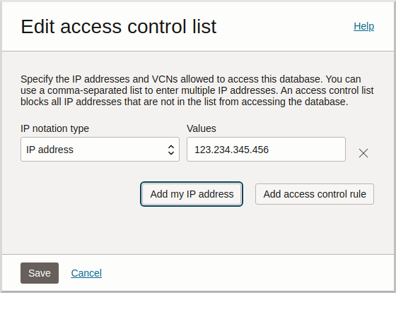
In the Oracle Cloud Autonomous Database Details page, click the "Mutual TLS (mTLS) authentication" Edit link in the Network section. Deselect the "Require mutual TLS (mTLS) authentication" checkbox and click "Save Changes":
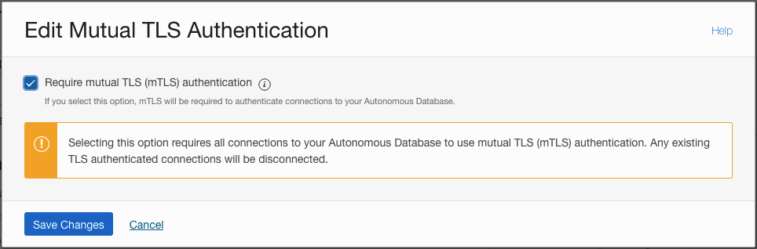
Click the DB Connection button, then choose one of the Connection Strings and click the "Copy" link to save the JDBC URL.
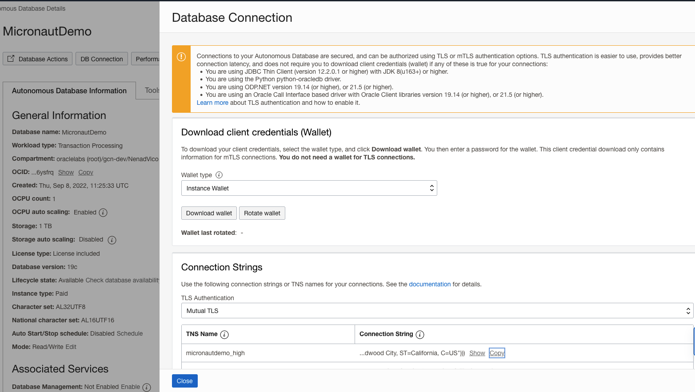
Setup DB connection in the IntelliJ Database tool:
Select Database tool and Data Source Properties in IntelliJ

In the Data Source and Drivers window, add a new DataSource and choose Oracle as the type:
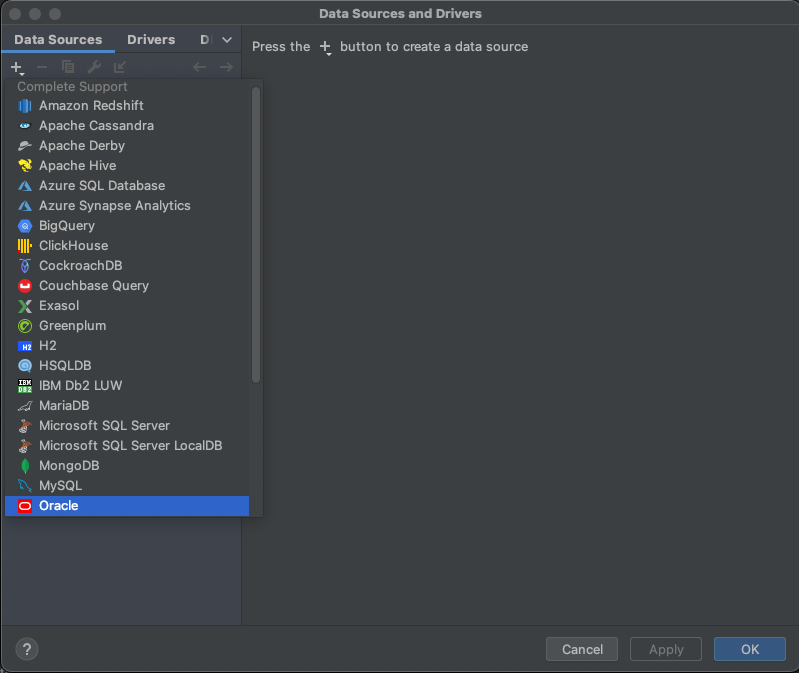
In the Configuration window, specify a value for Name, e.g., "MicronautDemo". Enter micronautdemo in the User field, and the user database password you created earlier in the Password field. Replace the default value in the URL field with the JDBC URL you saved earlier.

Click Test Connection and you should get a "Succeeded" message, then click OK.

Under the MICRONAUTDEMO user, create a select query for the 'THING' table:

9. Next Steps
Explore more features with Micronaut Guides.
Read more about the Micronaut Oracle Cloud integration.
Optionally, you can use the approach described in Deploy a Micronaut application to Oracle Cloud to deploy this application to Oracle Cloud.
10. License
| All guides are released with an Apache license 2.0 license for the code and a Creative Commons Attribution 4.0 license for the writing and media (images…). |